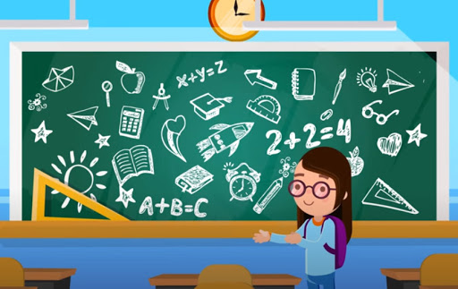

Bemutatkozás
Balla Ábel vagyok, a Budapesti Műszaki Egyetem elsőéves hallgatója. Azért döntöttem a BME mellett, mivel az energetika kifejezetten érdekelt, és a legjobb hazai képzés itt található. Szabadidőmben leginkább elektronikus zenét szeretek készíteni, pár kész számom már YouTube - on is fent van. Ezenkívül sok időt töltök a barátaim társaságában, akár személyesen, akár az online harcpályákon.
Tanulmányaim
2008-tól 2016-ig a Kaposvári Kisfaludy Utcai Általános iskolába jártam. Ezt követően sikeren felvettek a Kaposvári Táncsics Mihály Gimnáziumba, ahol kellő felkészítést és tudást kaptam ahhoz, hogy a BME-n folytathassam tanulmányaimat.

Egyéb kompetenciák
- Német felsőfokú (C1) nyelvvizsga
- ECDL vizsga
- B kategóriás jogosítvány
- ECDL vizsga
- ECDL vizsga